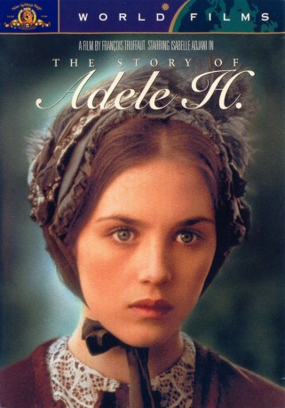

#7251 Die Geschichte der Adele H.
Alternativ: The Story of Adele H (Englischer Titel)
Auszeichnungen: für 1 Oscars nominiert
 
 IMDB-Wertung: 7.4 / 10
IMDB-Wertung: 7.4 / 10  Metascore: 0
Metascore: 0 
Adèle H., damit ist die Tochter des Schriftstellers Victor Hugo gemeint: 1863 folgt Adèle dem englischen Husarenleutnant Pinson nach Kanada. Aber die Liebe ist einseitig, Adèle ist für Pinson nur eine Affäre. Immer mehr entfremdet sich die junge Frau von ihrer Umwelt.
Jahr: 1975
Dauer: 93 Minuten
FSK: 16
Land: Frankreich Studio: MGM Home EntertainmentTonspuren: DD2.0 - ,
Untertitel:
Auflösung: 1080p (1808x1080) Größe: 5724 MB
Genre: Drama, Geschichte, Biographie
Regisseur: François Truffaut
Drehbuch: François Truffaut
Soundtrack:
Darsteller:
 Isabelle Adjani als Adèle Hugo / Adèle Lewly
Isabelle Adjani als Adèle Hugo / Adèle Lewly- Bruce Robinson als Lt Albert Pinson
 François Truffaut als Officer , uncredited
François Truffaut als Officer , uncredited- Sylvia Marriott als Mrs. Saunders
- Joseph Blatchley als Mr. Whistler
- Ivry Gitlis als Hypnotist
- Louise Bourdet als Victor Hugo's servant
- Cecil De Sausmarez als Mr. Lenoir
- Ruben Dorey als Mr. Saunders
- Clive Gillingham als Keaton
- Roger Martin als Doctor Murdock
- M. White als Colonel White
- Madame Louise als Madame Baa
- Jean-Pierre Leursse als Black penpusher
- Chantal Durpoix als Young whore , uncredited
- Raymond Falla als Judge Johnstone , uncredited
- David Foote als David, a young boy , uncredited
- Jacques Frejabue als Cabinetmaker , uncredited
- Carl Hathwell als Lt. Pinson's Batman , uncredited
- Edward J. Jackson als O'Brien , uncredited
- Aurelia Mansion als Widow with dog , uncredited
- Thi-Loan Nguyen als Madmoiselle Tilly, assistant of hypnotist , uncredited
- Ralph Williams als Canadian , uncredited
Datei: X:\1975\Geschichte der Adele H., Die (1975, FSK16, 1808x1080).mkv seit 09.10.2017
Festplatte: HD 1971-1979
 Es gibt insgesamt 27 Filme in der Gruppe '1975'
Es gibt insgesamt 27 Filme in der Gruppe '1975'